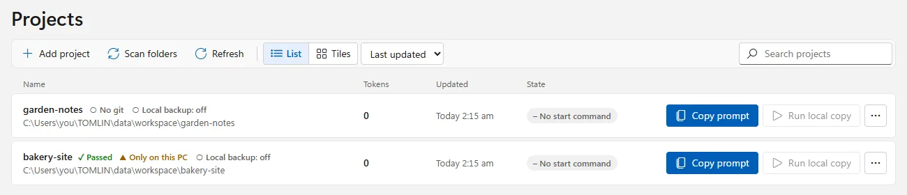
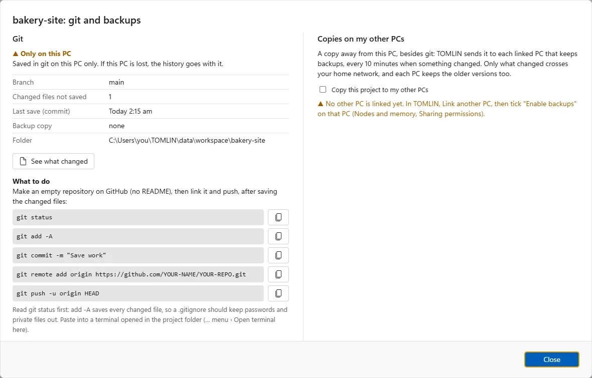

Git
Git marks, See what changed, and keeping Git itself up to date.
Projects in the left panel opens the Bridge (built in, in its own look): every project folder in your working folders, with its local copy (Run local copy, Stop), its git marks, a built-in audit, Hosted live lights for a site you host, Push live (one press sends it to your cPanel, FTPS or SFTP host, off until you turn it on), your saved prompts, and the tokens your AI tools used on it. Start with a hire, in a project's … menu, opens the Send to card here with the words, to send to one of your staff. Its own Help page says what each part does. Used Myia Bridge on its own before? Its About page has Bring in from Myia Bridge.

Git keeps a saved history of a project, and a copy on GitHub (or another host) is its backup. Each project shows its mark: ● Backed up, ▲ unsaved, ▲ not pushed, ▲ Only on this PC or ○ No git. Press a mark for the project's git window: what state it is in, See what changed (every changed file since the last save, line by line), and under What to do the exact commands to copy into a terminal (… menu, Open terminal here) to start git, save, link a GitHub copy and push. The Bridge only reads git: it never commits, pushes or changes a folder. The same window has Copies on my other PCs (Backups). About › Git in the Bridge says whether your Git program needs a security update.

The marks in the Bridge
Git keeps a saved history of a project, and a copy on GitHub (or another host) is its backup. The Bridge only reads git: it never commits, pushes or changes a folder.
- ● Backed up
- Everything saved is on the backup copy.
- ▲ unsaved
- Files changed since the last save. Commit them, then push.
- ▲ not pushed
- Saved here but not on the backup copy yet. Push.
- ▲ Only on this PC
- No backup copy at all. Make an empty repository on GitHub, then link it and push.
- ○ No git
- No history and no backup. Fine for scratch folders.
Click a mark for the exact commands to copy into a terminal (… menu › Open terminal here). The Git count in the bar at the bottom lists every project waiting for a save or push.
When files have changed, See what changed in the project's git window shows every changed file since the last save, line by line (green new, red gone), so you can read what an AI changed before you commit. It only reads: nothing is saved or undone.
Keeping Git itself up to date
Old versions of the Git program had security holes that a single git clone of a bad repository could set off. About › Git shows your version and warns when it is older than the last security fix this Bridge knows about. To update: winget upgrade --id Git.Git -e, or download it from git-scm.com. Ticking Check online for a newer Git lets the Bridge ask GitHub once a day for the newest version; until you tick it, it asks nothing.